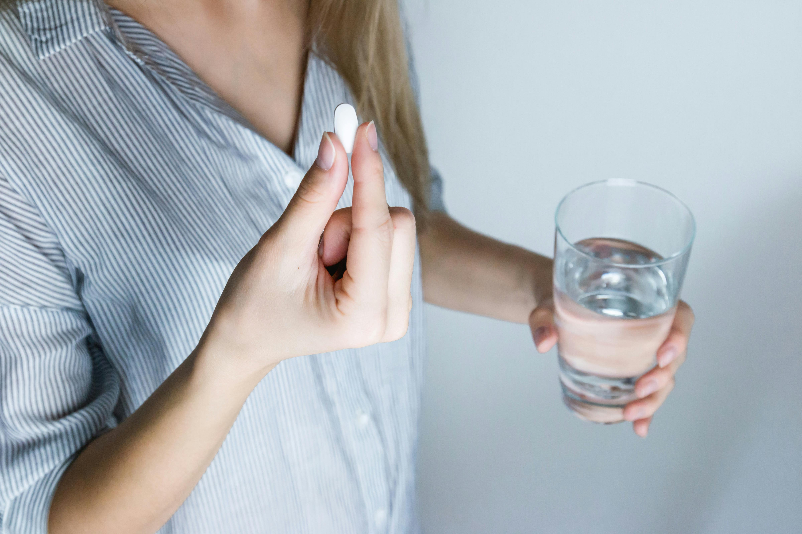

أخبار الصحة

انطلاق حملة تطعيم ضد الإنفلونزا الموسمية
أعلنت وزارة الصحة بدء حملة وطنية لتطعيم الفئات الأكثر عرضة للخطر، مع توفر اللقاحات في جميع المراكز الصحية.
اقرأ المزيد
افتتاح مستشفى تخصصي جديد في العاصمة
افتتحت وزارة الصحة مستشفى يضم أقسامًا للسرطان وأمراض القلب والولادة، مزود بأحدث الأجهزة الطبية.
اقرأ المزيد
دراسة: ارتفاع ضغط الدم يصيب 1 من كل 3 بالغين
أظهرت دراسة طبية جديدة أن نسبة كبيرة من السكان يعانون من ارتفاع ضغط الدم دون تشخيص، ما يعزز الحاجة للفحوصات الدورية.
اقرأ المزيد
خبراء: المشي اليومي يقلل خطر الإصابة بأمراض القلب
ينصح الأطباء بالمشي لمدة 30 دقيقة يوميًا كوسيلة فعالة لتعزيز صحة القلب وتحسين الحالة النفسية.
اقرأ المزيد
التغذية السليمة: تناول الخضار والفواكه يوميًا يعزز المناعة
خبراء التغذية يوصون بجعل الخضار والفواكه جزءًا أساسياً من النظام الغذائي لتقوية جهاز المناعة.
اقرأ المزيد

اليوم العالمي للصحة النفسية: التركيز على الدعم المجتمعي
الفعاليات هذا العام تركز على أهمية الصحة النفسية ودور المجتمع في دعم الأفراد خلال التحديات اليومية.
اقرأ المزيد